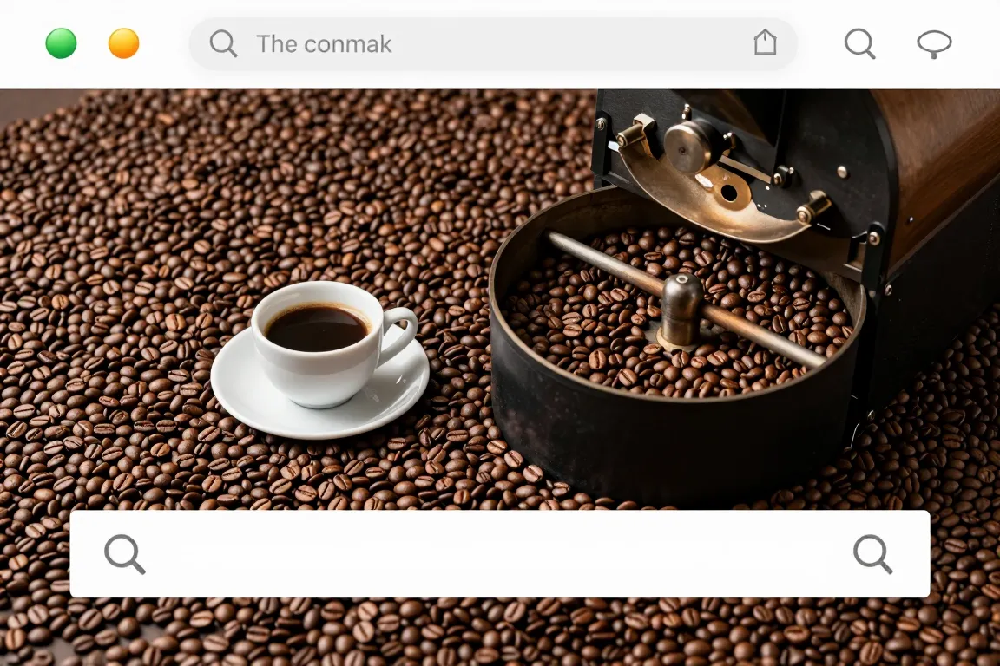

En tett startside i HTML-tabeller: et søkefelt, en lenkekatalog, nyhetsbokser, bannerannonser og en blå og oransje palett. Nettportaler på slutten av 1990-tallet brukte det for å holde en bruker på ett nettsted.

Kjerneidé
Én side rommer hele nettet: pakk hver tjeneste, lenke og annonse inn i en tydelig tabell av bokser.
Designprinsipper
Bygg siden med nestede HTML-tabeller på 760px til 800px bredde, sentrert, med 1px til 2px celleavstand.
Plasser logoen og et søkefelt med en knapp i en topptekstrad på 60px til 80px, over en fanerad på 24px.
Sett en lenkekatalog i 2 eller 3 kolonner med tekst på 11px til 12px og fete kategorinavn.
Gi hver boks en tittellinje på 18px til 22px i et lyseblått bånd (#99CCFF) med fet mørkeblå tekst.
Legg til et banner på 468px ganger 60px øverst og en skyskraper på 120px ganger 600px til høyre.
Sett alle lenker i blått (#0000CC) med understreking, og vis besøkte lenker i lilla.
Bruk avstandsbilder og en linje på 1px i grått (#999999) for å holde cellebreddene.